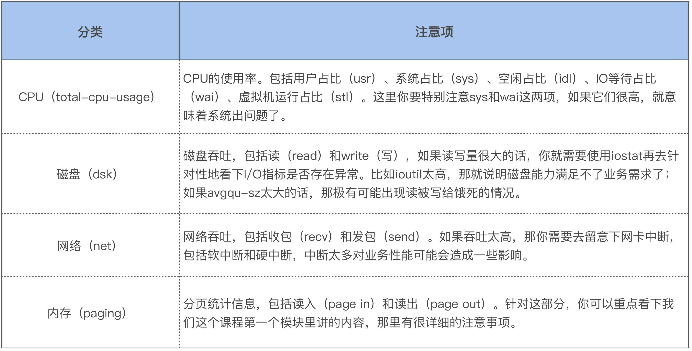
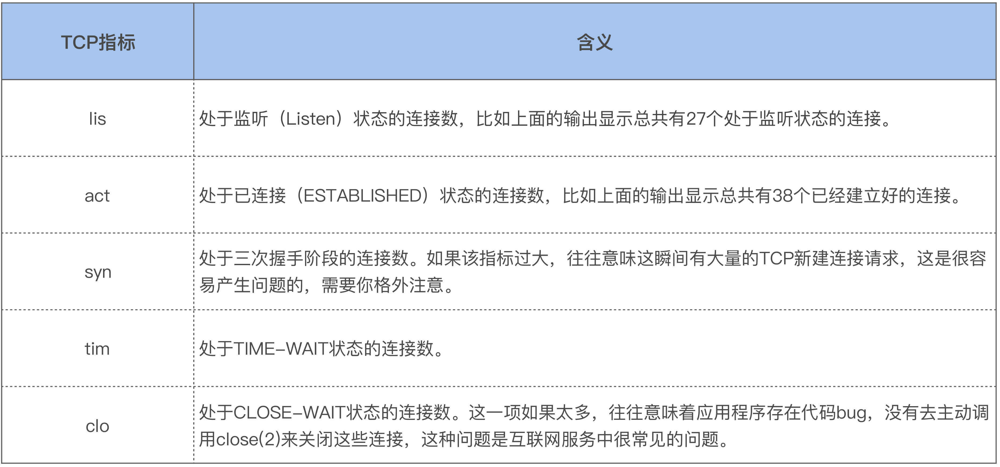
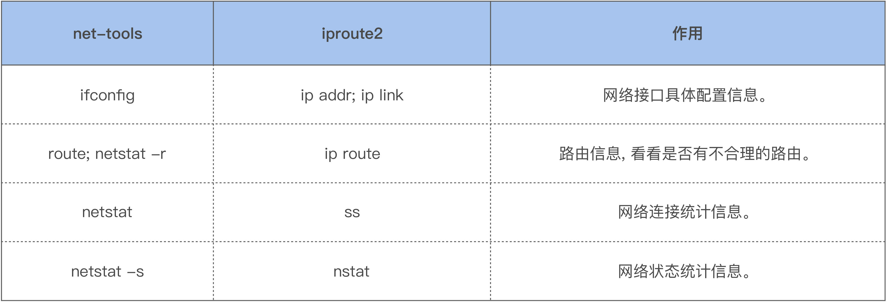
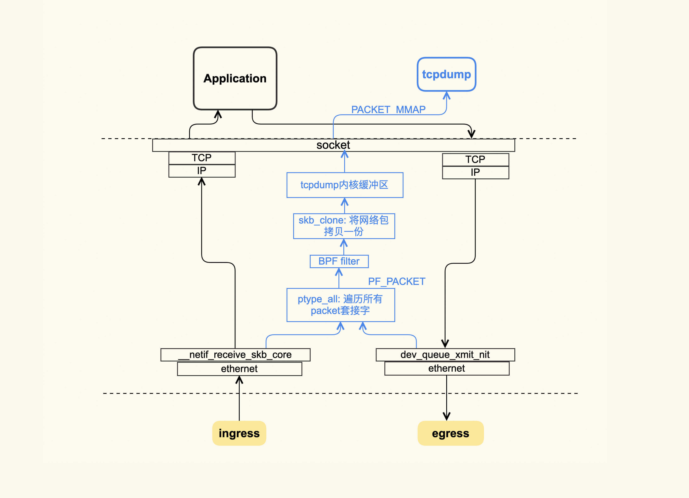
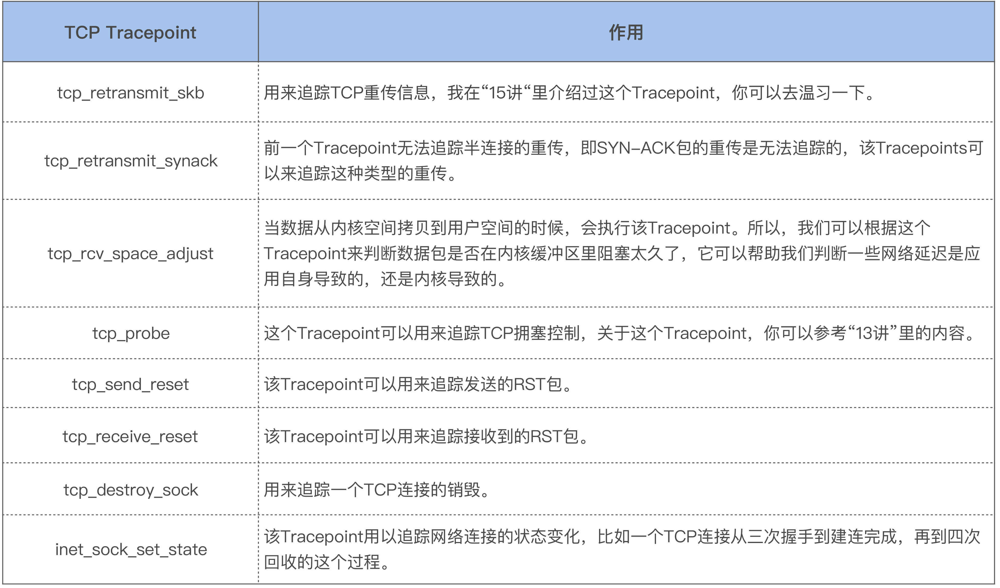

- 00 开篇词 如何让Linux内核更好地服务应用程序？.md
- 01 基础篇 如何用数据观测Page Cache？.md
- 02 基础篇 Page Cache是怎样产生和释放的？.md
- 03 案例篇 如何处理Page Cache难以回收产生的load飙高问题？.md
- 04 案例篇 如何处理Page Cache容易回收引起的业务性能问题？.md
- 05 分析篇 如何判断问题是否由Page Cache产生的？.md
- 06 基础篇 进程的哪些内存类型容易引起内存泄漏？.md
- 07 案例篇 如何预防内存泄漏导致的系统假死？.md
- 08 案例篇 Shmem：进程没有消耗内存，内存哪去了？.md
- 09 分析篇 如何对内核内存泄漏做些基础的分析？.md
- 10 分析篇 内存泄漏时，我们该如何一步步找到根因？.md
- 11 基础篇 TCP连接的建立和断开受哪些系统配置影响？.md
- 12 基础篇 TCP收发包过程会受哪些配置项影响？.md
- 13 案例篇 TCP拥塞控制是如何导致业务性能抖动的？.md
- 14 案例篇 TCP端到端时延变大，怎样判断是哪里出现了问题？.md
- 15 分析篇 如何高效地分析TCP重传问题？.md
- 16 套路篇 如何分析常见的TCP问题？.md
- 17 基础篇 CPU是如何执行任务的？.md
- 18 案例篇 业务是否需要使用透明大页：水可载舟，亦可覆舟？.md
- 19 案例篇 网络吞吐高的业务是否需要开启网卡特性呢？.md
- 20 分析篇 如何分析CPU利用率飙高问题 ？.md
- 加餐 我是如何使用tracepoint来分析内核Bug的？.md
- 结束语 第一次看内核代码，我也很懵逼.md
16 套路篇 如何分析常见的TCP问题？
你好，我是邵亚方。
对互联网服务而言， 网络问题是非常多的，而且很多问题的外在表现都是网络问题，这就需要我们从网络入手，分析清楚根本原因是什么。而要分析各种各样的网络问题，你必须掌握一些分析手段，这样在出现问题的时候，你就可以高效地找到原因。这节课我就带你来了解下TCP的常见问题，以及对应的分析套路。
在Linux上检查网络的常用工具
当服务器产生问题，而我们又不清楚问题和什么有关时，就需要运行一些工具来检查系统的整体状况。其中，dstat是我们常用的一种检查工具：
$ dstat
--total-cpu-usage-- -dsk/total- -net/total- ---paging-- ---system--
usr sys idl wai stl| read writ| recv send| in out | int csw
8 1 91 0 0| 0 4096B|7492B 7757B| 0 0 |4029 7399
8 1 91 0 0| 0 0 |7245B 7276B| 0 0 |4049 6967
8 1 91 0 0| 0 144k|7148B 7386B| 0 0 |3896 6971
9 2 89 0 0| 0 0 |7397B 7285B| 0 0 |4611 7426
8 1 91 0 0| 0 0 |7294B 7258B| 0 0 |3976 7062
如上所示，dstat会显示四类系统资源的整体使用情况和两个关键的系统指标。这四类系统资源分别是：CPU、磁盘I/O、 网络和内存。两个关键的系统指标是中断次数（int）和上下文切换次数（csw）。而每个系统资源又会输出它的一些关键指标，这里你需要注意以下几点：

如果你发现某一类系统资源对应的指标比较高，你就需要进一步针对该系统资源做更深入的分析。假设你发现网络吞吐比较高，那就继续观察网络的相关指标，你可以用dstat -h来查看，比如针对TCP，就可以使用dstat -tcp：
$ dstat --tcp
------tcp-sockets-------
lis act syn tim clo
27 38 0 0 0
27 38 0 0 0
它会统计并显示系统中所有的TCP连接状态，这些指标的含义如下：

在得到了TCP连接的整体状况后，如果你想要看TCP连接的详细信息，你可以使用ss这个命令来继续观察。通过ss你可以查看到每个TCP连接都是什么样的：
$ ss -natp
State Recv-Q Send-Q Local Address:Port Peer Address:Port
LISTEN0 100 0.0.0.0:36457 0.0.0.0:* users:(("test",pid=11307,fd=17))
LISTEN0 5 0.0.0.0:33811 0.0.0.0:* users:(("test",pid=11307,fd=19))
ESTAB 0 0 127.0.0.1:57396 127.0.1.1:34751 users:(("test",pid=11307,fd=106))
ESTAB 0 0 127.0.0.1:57384 127.0.1.1:34751 users:(("test",pid=11307,fd=100))
如上所示，我们能查看到每个TCP连接的状态（State）、接收队列大小（Recv-Q）、发送队列大小（Send-Q）、本地IP和端口（Local Address:Port ）、远端IP和端口（Peer Address:Port）以及打开该TCP连接的进程信息。
除了ss命令外，你也可以使用netstat命令来查看所有TCP连接的详细信息：
$ netstat -natp
不过，我不建议你使用netstat，最好还是用ss。因为netstat不仅比ss慢，而且开销也大。netstat是通过直接读取/proc/net/下面的文件来解析网络连接信息的；而ss使用的是netlink方式，这种方式的效率会高很多。
netlink在解析时会依赖内核的一些诊断模块，比如解析TCP信息就需要tcp_diag这个诊断模块。如果诊断模块不存在，那么ss就无法使用netlink这种方式了，这个时候它就会退化到和netstat一样，也就是使用解析/proc/net/这种方式，当然了，它的效率也会相应变差。
另外，如果你去看netstat手册，通过man netstat，你会发现这样一句话“This program is obsolete. Replacement for netstat is ss”。所以，以后在分析网络连接问题时，我们尽量还是使用ss，而不是netstat。
netstat属于net-tools这个比较古老的工具集，而ss属于iproute2这个工具集。net-tools中的常用命令，几乎都可以用iproute2中的新命令来代替，比如：

除了查看系统中的网络连接信息外，我们有时候还需要去查看系统的网络状态，比如说系统中是否存在丢包，以及是什么原因引起了丢包，这时候我们就需要netstat -s或者它的替代工具nstat了：
$ nstat -z | grep -i drop
TcpExtLockDroppedIcmps 0 0.0
TcpExtListenDrops 0 0.0
TcpExtTCPBacklogDrop 0 0.0
TcpExtPFMemallocDrop 0 0.0
TcpExtTCPMinTTLDrop 0 0.0
TcpExtTCPDeferAcceptDrop 0 0.0
TcpExtTCPReqQFullDrop 0 0.0
TcpExtTCPOFODrop 0 0.0
TcpExtTCPZeroWindowDrop 0 0.0
TcpExtTCPRcvQDrop 0 0.0
上面输出的这些信息就包括了常见的丢包原因，因为我的这台主机很稳定，所以你可以看到输出的结果都是0。
假如你通过这些常规检查手段没有发现异常，那你就需要考虑使用网络分析的必备工具——tcpdump了。
分析网络问题你必须要掌握的工具：tcpdump
tcpdump的使用技巧有很多，在这里我们不讲述这些使用技巧，而是讲述一下它的工作原理，以便于你理解tcpdump到底在干什么，以及它能够分析什么样的问题。
tcpdump的大致原理如下图所示：

tcpdump抓包使用的是libpacp这种机制。它的大致原理是：在收发包时，如果该包符合tcpdump设置的规则（BPF filter），那么该网络包就会被拷贝一份到tcpdump的内核缓冲区，然后以PACKET_MMAP的方式将这部分内存映射到tcpdump用户空间，解析后就会把这些内容给输出了。
通过上图你也可以看到，在收包的时候，如果网络包已经被网卡丢弃了，那么tcpdump是抓不到它的；在发包的时候，如果网络包在协议栈里被丢弃了，比如因为发送缓冲区满而被丢弃，tcpdump同样抓不到它。我们可以将tcpdump的能力范围简单地总结为：网卡以内的问题可以交给tcpdump来处理；对于网卡以外（包括网卡上）的问题，tcpdump可能就捉襟见肘了。这个时候，你需要在对端也使用tcpdump来抓包。
你还需要知道一点，那就是tcpdump的开销比较大，这主要在于BPF过滤器。如果系统中存在非常多的TCP连接，那么这个过滤的过程是非常耗时的，所以在生产环境中要慎用。但是，在出现网络问题时，如果你真的没有什么排查思路，那就想办法使用tcpdump来抓一下包吧，也许它的输出会给你带来一些意外的惊喜。
如果生产环境上运行着很重要的业务，你不敢使用tcpdump来抓包，那你就得去研究一些更加轻量级的追踪方式了。接下来，我给你推荐的轻量级追踪方式是TCP Tracepoints。
TCP疑难问题的轻量级分析手段：TCP Tracepoints
Tracepoint是我分析问题常用的手段之一，在遇到一些疑难问题时，我通常都会把一些相关的Tracepoint打开，把Tracepoint输出的内容保存起来，然后再在线下环境中分析。通常，我会写一些Python脚本来分析这些内容，毕竟Python在数据分析上还是很方便的。
对于TCP的相关问题，我也习惯使用这些TCP Tracepoints来分析问题。要想使用这些Tracepoints，你的内核版本需要为4.16及以上。这些常用的TCP Tracepoints路径位于/sys/kernel/debug/tracing/events/tcp/和/sys/kernel/debug/tracing/events/sock/，它们的作用如下表所示：

这里多说两句，表格里的tcp_rcv_space_adjust是我在分析RT抖动问题时贡献给内核的，具体你可以看net: introduce a new tracepoint for tcp_rcv_space_adjust这个commit。还有inet_sock_set_state，该Tracepoint也是我贡献给Linux内核的，具体可详见net: tracepoint: replace tcp_set_state tracepoint with inet_sock_set_state tracepoint。其实我对“inet_sock_set_state”这个名字不太满意，本来想使用“inet_sk_set_state”来命名的，因为后者更精炼，但是为了更好地匹配内核里的struct inet_sock结构体，我还是选择了现在这个略显臃肿的名字。
我们回到TCP Tracepoints这一轻量级的追踪方式。有一篇文章对它讲解得很好，就是Brendan Gregg写的TCP Tracepoints，这里面还详细介绍了基于Tracepoints的一些工具，如果你觉得用Python脚本解析TCP Tracepoints的输出有点麻烦，你可以直接使用里面推荐的那些工具。不过，你需要注意的是，这些工具都是基于ebpf来实现的，而ebpf有一个缺点，就是它在加载的时候CPU开销有些大。这是因为有一些编译工作比较消耗CPU，所以你在使用这些命令时要先看下你的系统CPU使用情况。当ebpf加载起来后，CPU开销就很小了，大致在1%以内。在停止ebpf工具的追踪时，也会有一些CPU开销，不过这个开销比加载时消耗的要小很多，但是你同样需要注意一下，以免影响到业务。
相比于tcpdump的臃肿，这些TCP Tracepoints就很轻量级了，你有必要用一用它们。
好了， 我们这节课就讲到这里。
课堂总结
我们讲了TCP问题分析的惯用套路，我再次强调一下这节课的重点：
- 尽量不要使用netstat命令，而是多使用它的替代品ss，因为ss的性能开销更小，运行也更快；
- 当你面对网络问题一筹莫展时，可以考虑使用tcpdump抓包看看，当系统中的网络连接数较大时，它对系统性能会产生比较明显的影响，所以你需要想办法避免它给业务带来实质影响；
- TCP Tracepoints是比较轻量级的分析方案，你需要去了解它们，最好试着去用一下它们。
课后作业
请问tcpdump在解析内核缓冲区里的数据时，为什么使用PACKET_MMAP这种方式？你了解这种方式吗？这样做的好处是什么？欢迎你在留言区与我讨论。
感谢你的阅读，如果你认为这节课的内容有收获，也欢迎把它分享给你的朋友，我们下一讲见。
© 2019 - 2023 Liangliang Lee. Powered by gin and hexo-theme-book.